ARQUITETURA CSS 2.0
Previsível, reutilizável, sustentável e escalável
Ney Simões
Problemática
O que é considerado bom?
- Reproduzir o PSD com perfeição (Pixel Perfect)
- Tableless
- Usar o mínimo de imagens
- CSS3 e todos seus recursos
- Pré-processadores
- Seletores HTML5
O que falta então?
- Código legível
- Fácil alteração ou ampliação
- Modular
- Escalável
Metas para uma boa arquitetura CSS
Previsível
As regras são claras ao ponto dos comportamentos serem previsíves quando utilizados. Adicionar mais estilos deve ser feito de forma fluida seguindo o padrão de toda a aplicação. Alterar ou adicionar estilos não deve afetar outras partes da aplicação.
Reutilizável
Os estilos devem ser abstraídos e desassociados ao ponto de você poder reutilizá-los. Usando regras já existentes para novos componentes.
Sustentável
Quando precisar alterar, adicionar ou reorganizar o conteúdo da aplicação, isso não deve exigir refatoração no código existente. Adicionar um novo componente à uma página existente não deve afetar outros componentes.
Escalável
Não importa se a equipe de front-end é composta por uma ou cem pessoas. O CSS deve ser facilmente gerido e mantido.
Erros comuns
Estilizar usando elemento pai
Um dos erros comuns é usar o elemento pai para determinar o contexto dos filhos.
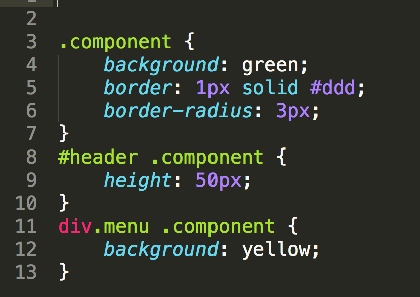Complicar sem necessidade
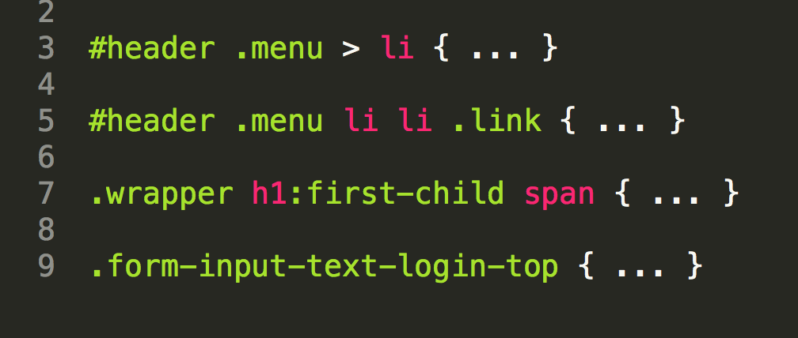Classes absurdamente genéricas
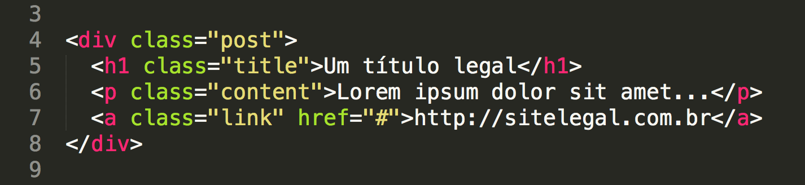 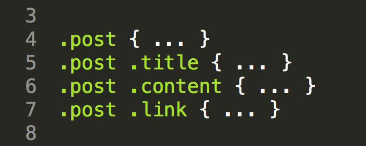Compreendendo as partes
Bloco ou componente
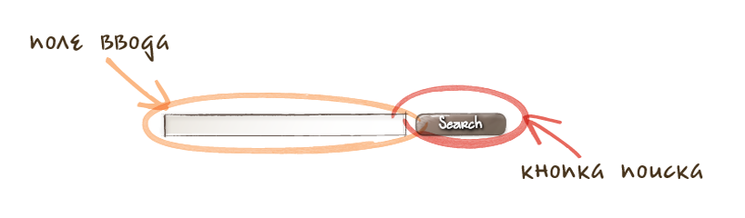Um bloco é uma entidade independente, um "bloco de construção" de uma aplicação. Pode ser simples ou composto (contendo outros blocos).
Elemento
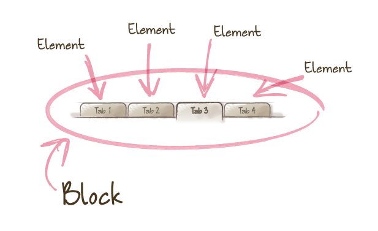Um elemento é uma parte de um bloco que executa uma certa função. Elementos são dependentes do contexto: eles só fazem sentido no bloco a que pertencem.
Modificador
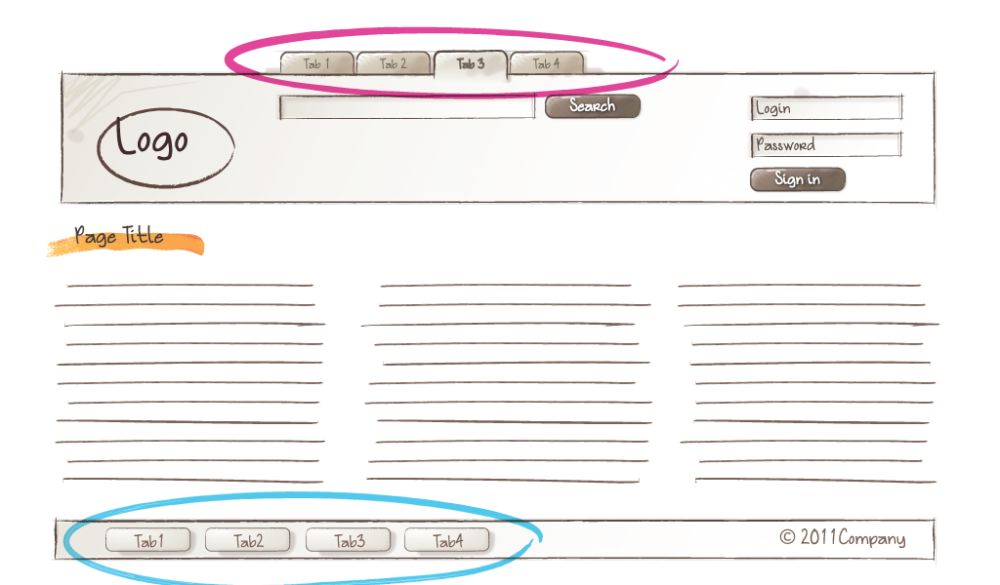O uso do modificador é opcional. Basicamente você cria um bloco e mudando o modificador você altera a aparência dele.
Soluções
Convenção de nomenclatura
Usando a metodologia BEM como base
Algumas regras são necessárias
- Nomes são escritos em caixa baixa usando letras e números
- Nomes compostos serão separados por hífen (-)
- Nunca use IDs ou o elemento para estilização apenas classes.
Blocos
Blocos são únicos por isso seus nomes também devem ser. Pode ser adicionado um prefixo para facilitar na hora da nomenclatura. A classe é o próprio nome.
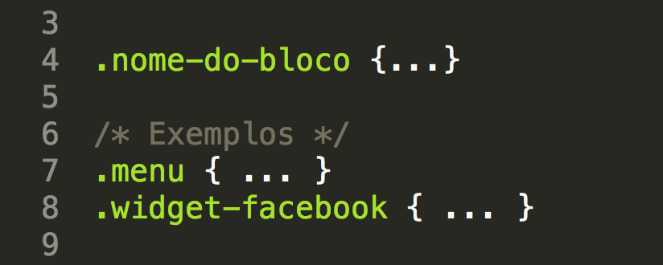Elementos
Seu nome deve ser único dentro do contexto do bloco, mas pode se repetir de um bloco para outro. A classe é o nome do bloco seguido pelo nome do elemento separado por dois sublinhados (__).
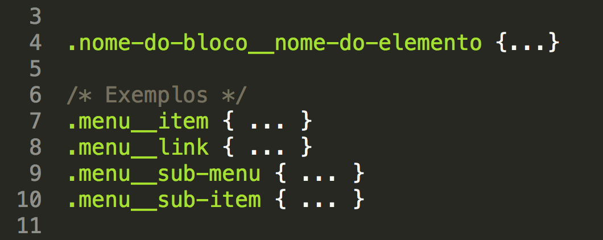Modificadores
O nome do modificador é composto pelo nome do bloco ou elemento a que pertence. O nome do modificador é delimitado com um único sublinhado (_) ou dois hífens (--).
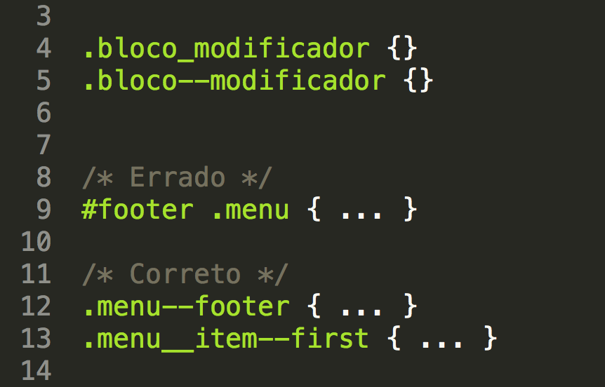
Organização de arquivos
Usando a metodologia SMACSS como base
Cinco principais categorias:
- Base
- Layout (.l-)
- Module
- State (.is-)
- Theme (placeholder)
Template
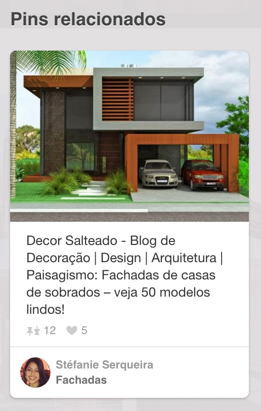 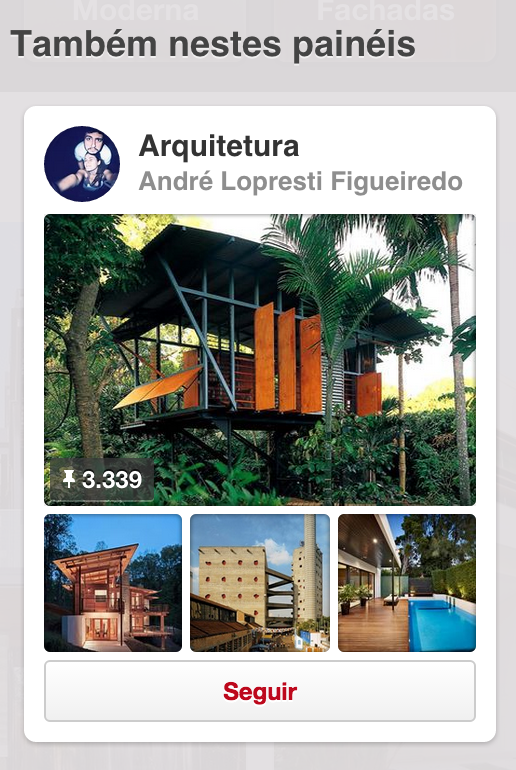 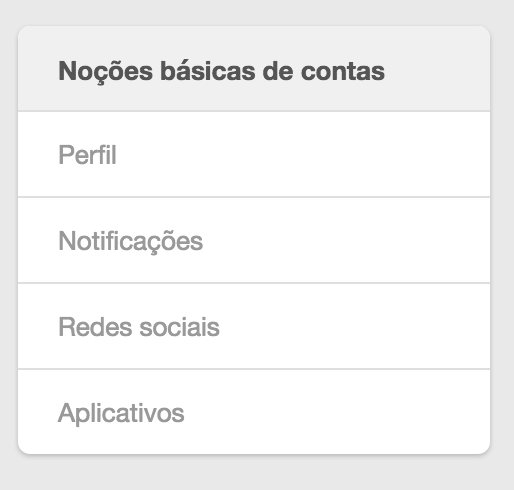Siga uma estrutura lógica de nomenclatura
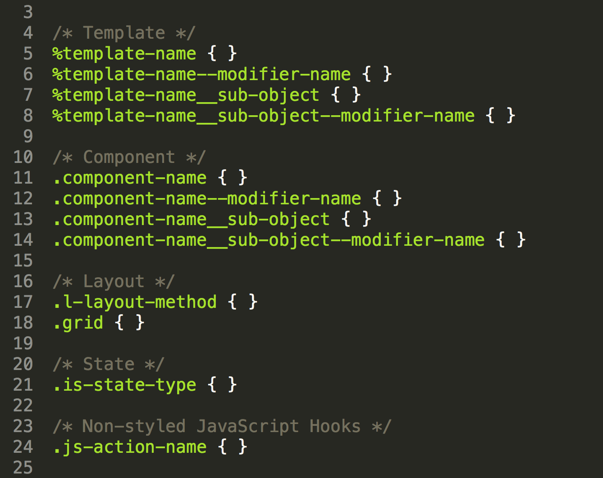Conclusão
- CSS não é apenas design visual
- Não jogue fora as melhores práticas de programação
- Seja crítico com seu código
- Não existe bala de prata